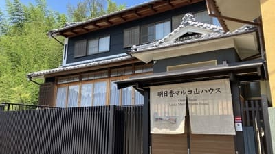
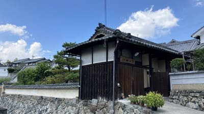
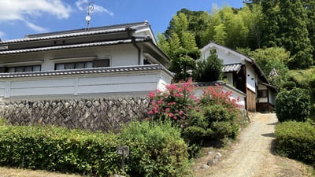
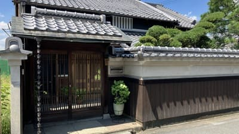
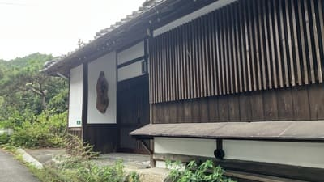
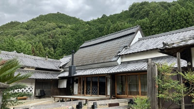
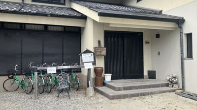
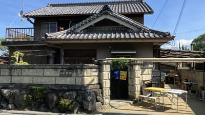
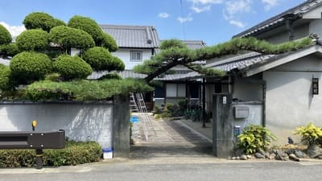
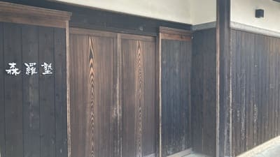

明日香村 泊まるマップ
ご利用案内
明日香村内の宿泊施設の一覧です。古民家宿、民宿、ペンションなど、明日香での滞在先探しにご利用ください。
※各カードをクリックすると、上のマップが該当施設の位置に移動します。最新の宿泊情報は各施設にご確認ください。
宿泊施設

1 カフェ＆ペンション飛鳥
明日香村の自然に囲まれた小さな宿。旬の食材を使った料理と、緑を望む客室でゆったり過ごせます。

2 古都里庵
一日一組限定の貸切古民家宿。広々とした一軒家と檜風呂で、明日香村の静かな時間を楽しめます。

3 明日香マルコ山ハウス
明日香村の自然を身近に感じながら過ごせる一棟貸しの宿。家族やグループでの滞在にもおすすめです。

4 明日香のお宿キトラ
キトラ古墳のすぐそばにある一日一組限定の宿。専用庭と露天風呂を備え、静かな滞在を楽しめます。

5 民宿脇本利夫
天武・持統天皇陵を望む歴史ある民宿。築250年以上ともいわれる古民家で、明日香の歴史を感じられます。

6 まほろの宿
古民家の趣を残して改修した一日一組限定の一棟貸し宿。明日香で暮らすように過ごせます。

7 Ｂ＆Ｂ Ａｓｕｋａ
明日香の中心にあるB&B。和の外観と英国アンティーク家具の洋風空間で、朝食とともにゆったり過ごせます。

8 民宿米川久義
飛鳥宮跡近くの趣ある日本家屋の民宿。昔ながらの家庭的な雰囲気と、明日香らしい田園風景を楽しめます。

9 民宿吉井靖亨
明日香村の中心部に位置する家庭的な民宿。観光地へのアクセスにも便利で、ゆっくり滞在できます。

10 明日香の宿
和モダンな一軒家を利用した隠れ家的な宿。庭と縁側のある空間で、明日香の一日をゆっくり楽しめます。

11 民宿 若葉
岡寺参道沿いに建つ静かな民宿。名物料理と温かな宿主のおもてなしで、明日香らしい滞在を楽しめます。

12 ブランシエラ 石舞台テラス
石舞台古墳を間近に望む全5室の宿。テラス付きの客室と地元食材の料理で、明日香を五感で楽しめます。

13 女性専用ゲストハウス月舟庵
一組貸切の女性専用ゲストハウス。木のぬくもりある空間と充実した設備で、最大8名まで宿泊できます。

14 清々風庵 Suzukazean
奥明日香の自然に囲まれた一棟貸しの宿。静かな環境で、都会の喧騒を離れてゆっくり過ごせます。

15 奥明日香古民家一棟貸し宿 弥栄
築250年以上の古民家を改修した一棟貸し宿。自然に囲まれ、川のせせらぎなど奥明日香を満喫できます。

16 民宿吉田
明日香村ののどかな環境にある家庭的な民宿。村の自然や史跡を巡る旅の宿として、ゆっくり過ごせます。

17 えん飛鳥
明日香村の自然と歴史に囲まれて過ごせる宿。観光で訪れた村を、ゆっくりと身近に感じられる滞在が楽しめます。

18 ブランシエラ ヴィラ明日香
築150年以上の古民家を活用した登録有形文化財の宿。広々とした客室と庭で、歴史ある明日香を満喫できます。

19 民宿吉田平次郎
甘樫丘の近くにある民宿。大和三山を望む環境と、家庭的な雰囲気の中でゆっくり過ごせます。

20 飛鳥民宿北村
歴史を巡り、絶景に触れ、温かい手料理に癒やされる宿。田舎の実家に帰ったような滞在を楽しめます。

21 あすか癒俚の里 森羅塾
雷丘の麓に佇む一日一組限定の古民家宿。歴史ある日本家屋を活かした空間で、明日香の風景を楽しめます。